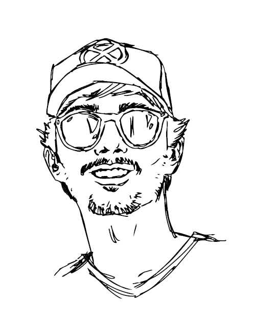

SERIOUS IDEAS.
RESTLESS SPIRIT.
Between art and
transformation.
I’m Luigi Cortopassi, a visual designer studying at ESPM. I explore branding, typography and illustration to turn ideas into identities with personality.
↓Selected work
09 projects

HI, I’M LUIGI.

Inspiration from
many worlds.
My name is Luigi Cortopassi. I study Visual Design at ESPM in São Paulo and work in design, with experience in branding, visual identity, communication, illustration and graphic design. Since the beginning of my studies, I have explored different fields and visual languages to understand how design can turn ideas into meaningful visual solutions. In 2025, I attended a Summer Program in Branding at the School of Visual Arts (SVA) in New York, where I visited studios including Pentagram, Wolff Olins and Landor & Fitch, broadening my exposure to the international creative industry.
More about my journey +
My work is influenced by a mix of art forms and visual references. I am particularly interested in branding, visual identity, art direction, typography and illustration, while comics, geek culture, video games, film and music are part of my personal world. These references influence my creative process, concept development and the way I approach my projects.
Throughout my journey, I have gained academic and professional experience in different areas of design. I worked at Medinas, developing the identity and materials for Swimcase, and I am currently an intern at Estúdio Arnold, working on branding and visual identity applications. I also took part in Design Lab and CEDs, ESPM’s student-run companies, and created an illustration published in Stories Collective magazine. My awards include the Emilie Chamie Award for best project and first place at Legends Lab, an ESPM program mentored by Zé Borghi.
I am curious, dedicated and ambitious, always looking for new challenges that help me learn and grow. Alongside my degree, I continually broaden my skills through courses in branding, 3D modeling, pattern design and artificial intelligence for creative processes. My goal is to build an increasingly distinctive practice, combining creativity, attention to detail and strategic thinking to turn ideas into design solutions with purpose and impact.
LET’S TALK